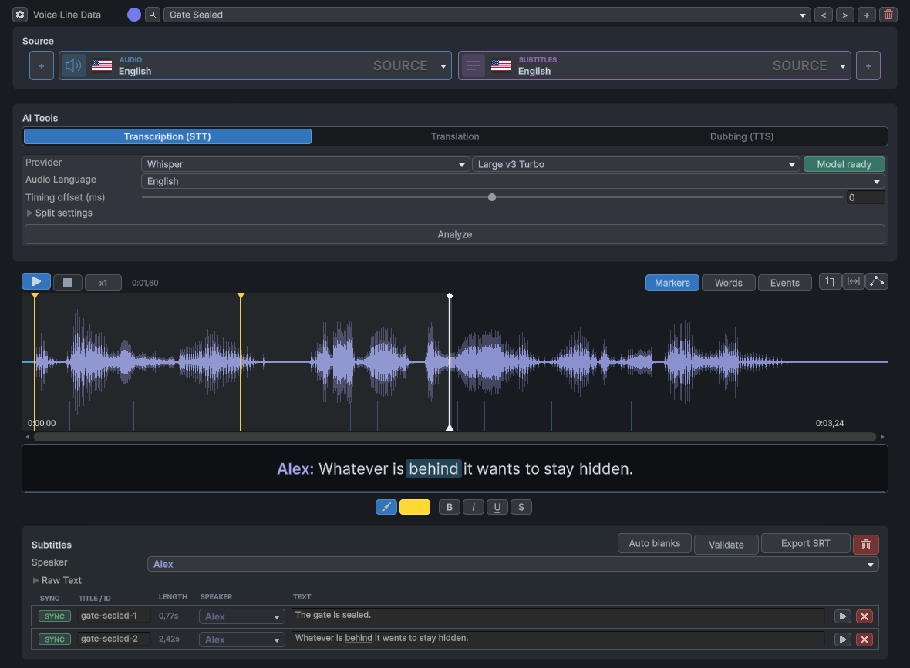
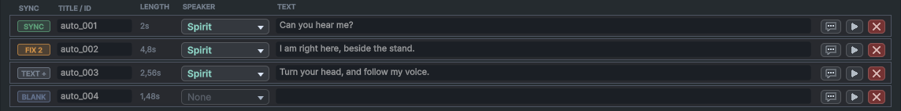
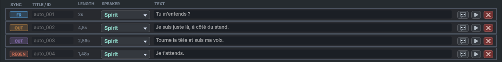
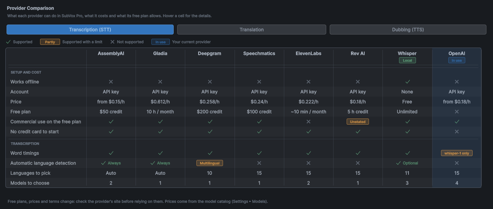
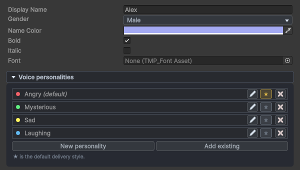
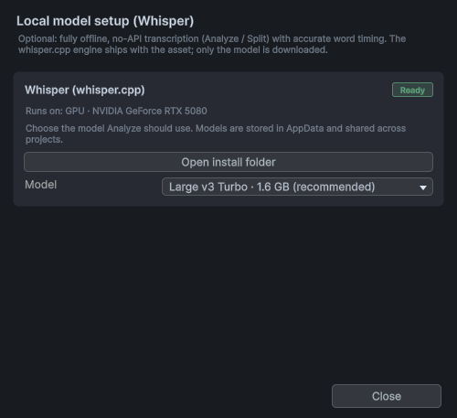

SubVox Pro
SubVox Pro turns your voice lines into synced subtitles and dubs, right inside Unity:
- Transcribe an audio clip into timed subtitles — with a cloud service or fully offline.
- Edit the timing on a waveform, style words, check reading speed.
- Translate into 48 languages and dub with text-to-speech, optionally in each character's own voice.
- Play everything in game with a few components, trigger gameplay events from a line, and drop lines onto Unity Timeline.
clip, recording, .srt, .txt
timed subtitles
markers, words, styles
48 languages
text-to-speech, cloned voices
components, events, Timeline
Start from audio or from text, and use only the steps you need.
Contents
- Before you start
- Quick start
- The SubVox Pro window
- Transcribe
- Translate
- Dub with text-to-speech
- Speakers and voice personalities
- Edit the audio
- Play voice lines in your game
- Trigger gameplay from a voice line
- Unity Timeline
- Process many files at once
- Work with your AI assistant
- Offline engines (no account, no API key)
- Human translation with Google Sheets
- Settings
- Keyboard and mouse
- Supported languages
- Your data and online services
- AI-generated voices in your game
- Where your files go
- Updating and uninstalling
- Troubleshooting
- Support
Getting an account and an API key for each service is explained step by step in Provider Setup.
Before you start
- Unity 2022.3 LTS or newer (Unity 6 included), any render pipeline (Built-in, URP, HDRP).
- TextMesh Pro — import TMP Essentials once if your project hasn't already. On Unity 2022.3, first install the TextMeshPro package from the Package Manager (Unity 6 already includes it).
- Unity Timeline is optional: the Timeline features appear as soon as the package is installed.
- In game, SubVox Pro runs on every platform Unity supports.
- In the editor, SubVox Pro is tested on Windows. The cloud services, with your own API keys, should also work in the macOS and Linux editors, but have not been tested there yet. The offline engines (transcription, translation and dubbing without any account) need the Windows editor.
Quick start
From one audio clip to synced subtitles on screen in a few minutes.
The Hub
Everything in SubVox Pro is one click away in Tools ▸ SubVox Pro ▸ Hub. Its nine tiles open the voice line editor (and batch processing), the Dub Booth, Google Sheets, the MCP server for AI assistants, the additional (offline) models, the provider comparison, the documentation, the example scenes and the settings.

Voice Line Editor opens a second screen with the Voice Line Editor itself and Batch Processing, for many files at once (Back returns to the tiles). Documentation opens another one:
| Button | Opens |
|---|---|
| Online | The guide, providers and scripting reference, in English, French, German, Japanese or Simplified Chinese |
| Local | The English PDF, available offline |
| Provider Setup | The same PDF, opened directly at its Provider Setup part |
| Video Tutorials | The SubVox Pro tutorials on YouTube |
| Discord | The community server, to ask questions and share your work |

Five steps
1. Pick how you will transcribe. Either paste an API key for a speech-to-text service in Tools ▸ SubVox Pro ▸ Settings (where to get one), or, on Windows, use Whisper or Parakeet, which run offline for free (they offer to download their model the first time).
2. Create a voice line. Assets ▸ Create ▸ SubVox Pro ▸ Voice Line, select it and click Edit Voice Line in the Inspector. The SubVox Pro window opens on a new voice line: check its Language (English the first time, then the last one you picked), choose Add an audio track and pick your clip, or record one.
Alternatively, right-click an audio file in the Project window and choose SubVox Pro ▸ Create Voice Line. Choose where to save the new voice line; the editor opens with that audio already assigned.

3. Transcribe. In AI Tools ▸ Transcription, pick the provider and the spoken language, then click Transcribe. Your subtitles appear on the waveform.
4. Adjust. Drag the markers on the waveform, fix the text in the list below, press Space to listen.
5. Show them in game. Drop the [SubVox Pro] and Subtitle Displayer prefabs (SubVoxPro/Prefabs) into
your scene, then play the line:
using SubVoxPro;
SubVox.Play(myVoiceLine);
Want to see it running first? Open Examples in the Hub (or Tools ▸ SubVox Pro ▸ Example Scenes) and press Play. Four ready-made scenes, with voice lines in four languages, speech bubbles, dialogue sequences, voice events and subtitle options:
- a 3D temple;
- a 2D neon station;
- a noir visual novel;
- a first-person sandbox with one stand per feature.
The SubVox Pro window

Open it with Tools ▸ SubVox Pro ▸ Voice Line Editor, or Edit Voice Line on a voice line's Inspector. From top to bottom:
- Voice Line Data — the voice line you are editing, with buttons to create a new one, browse the others, split it and delete it. The colored dot is a tag shown on the asset's icon in the Project window, to sort your lines. The voice lines of the example scenes are kept apart in a closed Examples folder at the bottom of the list.
- Source — the AUDIO and SUBTITLES selectors. Each voice line has one source language (the flag; click it to change it) and one track per translated or dubbed language. The two selectors are independent, so you can, for example, read the French subtitles while listening to the English audio.
- AI Tools — transcription, translation and dubbing (below).
- Timeline — the waveform with your subtitle markers. Each marker is where a subtitle starts; a marker with no text clears the screen (a blank). Markers belong to the audio: the source and each dub have their own markers, placed on their own audio.
- Live preview — the subtitle under the playhead, as it will look in game. Pick a color or a style above it, then drag over words to paint them (right-drag erases).
- Subtitles — one row per subtitle: its name, length, speaker and text, with a button to play it.
Tags and languages
Click the tag beside Voice Line Data to choose both a color and a shape. Clear tag removes it. The shape helps distinguish voice lines without relying on color alone. Click A-Z or 0-9 to use a letter or a digit as the shape.

Click the source flag to choose the spoken language.
- Flags identify languages, not a speaker's nationality: the picker shows their names and codes, so you do not have to recognize the flag.
- Languages already used by a translation or a dub are greyed out.
- To clear the source subtitles, use the cross on the source row of the SUBTITLES selector.

Starting without audio

A voice line can start from text instead of audio. Choose Add a subtitles track, then:
| Choice | Gives |
|---|---|
| Import an .srt file | Subtitles with their timings |
| Import a .txt file | One subtitle per line, timed automatically at a comfortable reading speed |
| Add lines manually | The lines you type yourself |
Set the Length of the line: it plays for that long in game until you add audio or generate a dub from the text.
Recording audio

Record with a microphone (in Add an audio track or the + next to the AUDIO selector) opens a small recorder:
- Pick the microphone and watch the level. To set it, click Calibrate next to Gain and speak normally for 3 seconds.
- Record, then listen back.
- Click Use recording. The take is saved as a WAV next to the voice line.
On macOS, allow Unity to use the microphone in System Settings.
Reading along while you record

When the voice line already has subtitles, the recorder shows them in Read along, so you can record a dub while reading the text. Pick the language to read in the dropdown (or Off).
As you speak, the words turn green when they are heard and red when they were skipped. The text scrolls one line at a time, keeping the previous line in view.
- It runs on your computer, for free: it needs Parakeet or a local Whisper model (Tools ▸ SubVox Pro ▸ Additional Models). When several are installed, pick the one to use in the menu next to the language.
- Retake throws the take away and starts recording again right away.
- Listen plays the take from the playback marker. Click or drag on the waveform to move the marker; Stop leaves it where you stopped. Space also plays and stops the take.
- After Stop, the whole take is checked once more. Red words you did say can be clicked to accept them.
- Use recording adds the take as usual (replace a track or add a dub), with each word timed from your take. When Qwen3 word timing is installed, it refines those timings. Undo restores the previous timings.
Dubbing in sync with the original (Dub Booth)

The Dub Booth records a dub the way voice actors do: one line at a time, over the original performance, so your take lands where the original line is. Open it from + Add audio ▸ Dub over the original, the Hub, or Tools ▸ SubVox Pro ▸ Dub Booth. Wear headphones, so the original does not reach the microphone.
Recording a line
first
countdown
on the 4th beat
at the line's end
- Pick the voice line and the language to dub. Picking Original (ADR) re-records the original language.
- Press Space. The original plays a few seconds before the line, three beeps count down, and recording starts on the fourth, silent beat. The text scrolls past the playhead, word by word, between the IN and OUT marks.
- The take stops by itself at the end of the line (or press Space).
- Badges tell you whether you started on cue and how much longer or shorter than the original you spoke. Hover them to see both timings.
- Botched it while recording? Discard (or Esc) throws the take away at once, without waiting for the end.
- Listen and compare (see the table below), or Redo the take.
- Validate & next (or Enter) marks the take as final and moves to the next line to record. Unvalidate takes it back.
- Build dub places the kept takes on the original timeline and adds them as that language's dub (or, for Original (ADR), Replace original). Words are then timed on your takes, line by line, with no model to install. Install Qwen3 word timing (Additional Models) for even more precise timings.
Listening and comparing takes
| Control | What it does |
|---|---|
| Play | Plays your take in sync with the original |
| Menu next to Play | This line, With previous line (to check that a correction follows the line before) or All lines, each with its validated take |
| Speaker icons (ORIGINAL, YOUR TAKE) | Choose what you hear; A swaps between them |
| Redo (or R) | Records another take. Every take is kept |
| TAKE | Picks a take again; the validated one is marked ✓ |
| Bin next to TAKE | Deletes the selected take (a new take reuses the first free number) |
Line too long or too short
- Shorten — a translation often runs 20 to 30% longer than the original. When a line will be hard to say in the time of the original, a notice under its text says so before you record. Shorten asks your translator (OpenAI, Claude, Gemini or DeepSeek) for a shorter line with the same meaning that fits that time; Undo brings the previous text back.
- Fit to original — next to the badges, it stretches or compresses a take by up to 10%, without changing the pitch of the voice, and moves it so it starts with the original. The result is a new take, ready to validate. Further off than 10%? Redo the take: stretching it more would sound unnatural.
Several lines at once
The menu above the line list sets what one recording covers:
| Choice | Records |
|---|---|
| Record one line | The selected line |
| Record several lines | From the line you click to the one you Shift-click |
| Record all lines | From the selected line to the end |
Several lines are recorded in one go, at a natural pace, then split into one take per line.
Settings and saving
- Booth settings sets the microphone, the gain (Calibrate works as in the recorder), how much of the original plays before the line, the beeps, what you hear while recording and the scrolling speed (a minimum: the text speeds up when a line would not fit).
- Takes are saved as you go: close the window and come back later to pick up where you left off.
Adding your own dubs
Already have recorded dubs? Click the + next to the AUDIO selector and pick or record the clip. A window then asks which language it is:
- Replace a track — put it in place of the original audio or of an existing dub;
- Add a new track — pick its language to add it as a new dub.
The lines are placed proportionally on the new audio (or timed from the take when you read along): drag the markers to fine-tune them. Translated lines in that language are shown over the dub when they exist.
Importing subtitles in another language
The + next to the SUBTITLES selector imports an .srt or a .txt file. On a voice line that already has content, a window asks which language the file is in:
- Replace a track — replace the original subtitles (with the file's timings) or an existing translation;
- Add a new track — pick its language to add it as a new translation.
A translation keeps the timing of the original lines. Each imported line goes to the original line at the same
position or, for an .srt with a different number of lines, to the original line playing at that time.
Checking your subtitles
- Show CPS (in Settings) displays the reading speed of each line and flags lines that go too fast.
- Check Subtitles (shown with Show CPS) walks through every problem one at a time — empty or duplicate names, lines outside the clip, overlaps, lines too fast to read — with one-click fixes. Everything is undoable.
- Auto blanks hides the subtitle while nobody speaks, without adding markers. Click its button (after the crop, time edit and effects tabs at the right of the timeline toolbar), turn it on in its popup and adjust how long a silence must be; the hidden parts are shaded on the waveform.
- Export SRT saves the subtitles as an
.srtfile.

| Auto blanks setting | What it does |
|---|---|
| Silence | How much quieter a pause must be than the voice |
| Min pause | Ignores very short gaps |
| Hold out | Keeps the text briefly after the voice stops |
| Lead in | Brings the text back before speech resumes |
| Only between two lines | Prevents a subtitle from disappearing and reappearing in the middle of its sentence |
The SYNC chips
Each row of the Subtitles list starts with a colored chip, in the SYNC column, that tells you the state of that line. Hover a chip to see the details; when a chip can be clicked, its tooltip says what the click does.
On the source subtitles, the chip tells you how well the words are timed on the audio:

| Chip | Meaning | What to do |
|---|---|---|
| SYNC | Every word is timed on the audio: words appear exactly when they are spoken. | Nothing. |
| FIX n | n words have an estimated time: they were not heard on the audio. | Check their word markers on the waveform (Words mode) and move them if needed. |
| TEXT + | The line has no word timings, so it appears all at once. | Click the chip to estimate a time for each word from the text. The line then shows FIX, since those times are estimates. |
| BLANK | A marker with no text: it clears the screen until the next subtitle. | Nothing. |
On a translation (pick its language in the SUBTITLES selector), the chip tells you whether the line still matches the source and its dub:

| Chip | Meaning | What to do |
|---|---|---|
| FR | The language code (FR, EN-US…): the translation is up to date with the source. The tooltip also says whether its dub is up to date. | Nothing. |
| OUT | The source line, or its translation note, changed after it was translated. | Click Synchronize translations (Translation tab) to translate it again, or click the chip once you have checked the line to mark it as up to date. |
| CUT | A source marker moved, so the translated line was cut again automatically and may break in the middle of a phrase. | Click Fix splits (Translation tab) to cut it again with AI, or click the chip to keep this cut. |
| REGEN | The dub no longer matches the line: its text, voice, personality, sounds or groups changed, the provider, model or generation mode changed, or the line was never dubbed. | Hover it to see why, click it to regenerate only what is needed. |
| DUBBING | The dub of this line is being generated (the chip is animated). | Wait. |
A line shows one chip at a time, in this order of importance:
A BLANK line always shows BLANK.
Deleting a voice line
The trash button deletes the voice line. It lists the files that go with it: the ones SubVox Pro generated (dubs, recordings) are selected, your own files are not, and a file still used elsewhere is locked. Everything goes to the system trash, so it can be recovered.
Splitting a voice line
When one voice line holds several moments you want to play separately, the split button (beside the trash) cuts it into several voice lines:
- Click between two subtitles to cut there. A cut always falls between two subtitles, in the pause that separates them.
- Add as many cuts as you need.
- Name the new voice lines.
What happens to the parts:
- Each part keeps everything that belongs to its subtitles: audio, translations, dubs, speakers, audio effects and events.
- The first part stays in the current voice line, so your scenes and Timelines still point to it. The other parts are created next to it.
- Each part gets its own audio files, and your original files are kept.
- A split cannot be undone.
Transcribe

- Pick a Provider and, when it offers several, a Model. The badge on the right says whether it is ready (key set, or model downloaded).
- The language transcribed is the flag of the selected audio track; to change the source language, click its flag. A notice appears when the provider can't transcribe that language and lists the providers that can. If the source has no language yet, providers that detect it on their own set it for you; with the others, Transcribe asks for it first.
- Click Transcribe: the audio is turned into words, then grouped into subtitles. Split settings set the longest a subtitle may last, how early it appears before its first word, and whether lines should end on punctuation. If the voice line already has subtitles, you are asked before they are replaced.
- Not happy with the cuts? Change the Split settings: a small Re-split button appears at the end of the Smart split row; click it: the same words are grouped again, without transcribing (or paying) a second time.
Word timing
Word timing chooses where the timing of each word comes from:
| Option | What it does |
|---|---|
| From the provider (default) | Keeps the timings returned by the transcription. |
| Built-in aligner | Places every word again on the audio before the subtitles are cut, so cuts fall on the real pauses. Nothing to install, works in every language. |
| Qwen3 aligner (local) | The same, with the most precise timings for word-by-word subtitles (install it once). In a language Qwen3 does not support, the provider's timings are kept. |
The aligners never change the text. The Re-align button at the end of this row works with either aligner (it is greyed out with From the provider): after fixing a word or moving a cut by hand, click it to place the words on the audio again while keeping your text and cuts.
Providers
AssemblyAI, Gladia, Deepgram, Speechmatics, ElevenLabs, Rev AI, Cartesia, OpenAI, or Whisper and Parakeet offline.
Not sure which one to take? Tools ▸ SubVox Pro ▸ Provider Comparison puts them side by side: price, free plan, commercial use, languages.

Tip: OpenAI gpt-transcribe returns text without word timestamps; timings are estimated over the clip. Use local alignment or a provider with word timestamps when timing matters.
Transcription works on the audio selected in the AUDIO selector, so you can also transcribe a dub.
Translate

- Pick a Provider: DeepL, Google Translate, OpenAI, Claude, Gemini, DeepSeek, or Hy-MT2 offline.
- Check one or several Target languages, or pick a preset, to create several languages at once.
- Set the Formality (formal or casual "you") if the language has one.
- Click Translate. Each language gets its own track; switch between them with the SUBTITLES selector.

In the Target popup:
- check as many languages as you want on the left, then Save as preset on the right to reuse them;
- choosing a preset translates into all its languages in one operation;
- the right-hand column edits the preset's name and languages.
Help the translator
Ambiguous lines translate better with context:
- a global context for the whole voice line (speech-bubble button);
- if needed, a note on a single line (its speech-bubble button in the list).
Keep translations in sync
| When you… | The translated lines show | Then |
|---|---|---|
| change a source line after translating it | OUT | Click Synchronize to re-translate only the lines that changed, or click the chip once you have checked the line. |
| move markers so that a sentence is cut in a new place | CUT | Fix splits asks an AI provider to cut the translation at the same meaning, without changing its words. |
Dubs follow automatically. All the chips are explained in The SYNC chips.
Dub with text-to-speech

- Select the language to dub in the SUBTITLES selector.
- In AI Tools ▸ Dubbing, pick a Provider and a Voice. The ▶ button next to a voice plays a sample. Use speakers' voices lets each line use the voice of its speaker.
- Choose the Generation mode (see the table below).
- Click Generate language audio track (for example Generate French audio track). The dub becomes a new audio track, played instead of the original when that language is active.
A dub does not last exactly as long as the original, so it gets its own markers: they do not line up with the source's, and moving one does not move the other.
To use the audio elsewhere, click Export audio… under the Generate button: it saves a copy of the current audio file, exactly as it is now, in the folder you choose.
Generation modes
| Mode | One take for | Good to know |
|---|---|---|
| Each subtitle | Each line | Easiest to fix line by line |
| Per speaker | Each group of lines from the same character | More natural flow |
| All together | The whole voice line | The most natural, but everything is regenerated at once |
| Groups | The words you choose | See below |
Groups mode
Choosing Groups turns on the Groups tool above the waveform. Each group is spoken in one take, with the voice and personality of its first word, and the subtitle text takes the group's color. At first, one group holds everything.
| On the waveform | Result |
|---|---|
| Drag inside a group | Splits it in three, with the new group in the middle. It can start or end in the middle of a line, and gets its own color. |
| Drag the boundary between two groups | Moves it. Pushing it past a whole group removes that group; dragging back before releasing brings it back. |
| Right-click a group | Removes it: its neighbor takes its place. |
| Bin button | Merges everything back into one group. |
Groups are saved per subtitle language.
Sounds (laughs, sighs, pauses…)
The Sounds tool above the waveform adds a sound for the voice to perform between two words. Sounds are only sent to the voice, never shown in the subtitles.
| On the waveform | Result |
|---|---|
| Middle-click between two words | Pick a sound: a pill marks the spot. |
| Left click | Moves the playhead, as in the other modes. |
| Drag a pill | Moves it to another gap. |
| Right-click a pill | Removes it. |
| Copy button | Places the sounds in the other languages, at the same point in each line. |
| Bin button | Removes the sounds of the current language. |
- Each subtitle language has its own sounds. Adding, moving or removing a sound puts a REGEN chip on the line.
- The list only shows the sounds the selected provider can perform: InWorld, ElevenLabs v3 and v4, Gemini and Cartesia Sonic 3.
- Below the list, you can add your own words (for example giggles). They are saved in your library for every voice line. Only ElevenLabs v3 and v4 and Gemini can perform your own words, so they are hidden with the other providers.
- A greyed pill is a sound the current provider can't perform: it is skipped when generating.
Providers
| Provider | Notes |
|---|---|
| InWorld, ElevenLabs, Gemini, OpenAI, Google Cloud, Azure, Cartesia | Online services |
| Kokoro | Offline, English |
| Chatterbox | Offline, 21 languages, keeps each character's voice |
| Qwen3 TTS 1.7B | Offline, ten languages: reference cloning, fixed voices and voice design |
| VoxCPM2 | Offline, 30 languages: reference cloning with written style control, and voice design |
Options
Word timing — how the words of the dub are timed:
- Qwen3 aligner (local) makes words appear exactly when they are spoken (install it once);
- Built-in aligner times each word on the generated audio with nothing to install, a little less precisely;
- None keeps line timings only, if you don't reveal subtitles word by word.
It starts on Qwen3 aligner once the aligner is installed, and on None before that. The Re-align button at the end of the row places the words of the selected audio (a dub or the source) on it again, for example after fixing a word by hand.
Voice direction — the speech-bubble button next to the voice gives the tone of the performance (for example calm, whispering), on the providers that understand it.
REGEN — when a line's dub no longer matches (text, voice or personality changed), a REGEN chip appears on it. Hover it to see why, click it to regenerate only what is needed.
Voice cloning — with ElevenLabs (paid plan), Chatterbox, Qwen Base or VoxCPM2, pick Original voice to dub each character in their own voice, cloned from the source audio. You can also clone a voice from a clip placed in the
Voicesfolder of your data folder. Only clone voices you have the right to use.
OpenAI and some other services require telling your players that the voices are AI-generated — see Provider Setup.
Speakers and voice personalities
Speakers

A speaker is a character: a name shown before their subtitles, in their own color, and their voices for dubbing. Create one with Assets ▸ Create ▸ SubVox Pro ▸ Speaker or from the speaker picker in the window.
- Set the speaker of a whole voice line in the Speaker field above the list: it applies to every line. Each line can still pick its own speaker in its row; the field then shows Mixed.
- In the speaker's Inspector, Text-to-speech voices choose their voice per provider, with a fallback for every language and optional overrides per language.
- On the Subtitle Displayer (or Subtitle Document Displayer), Speaker Name Mode shows the name in front of the line (Inline), above it (Above), or not at all (Hidden). A speaker can also have its own font: Font (TextMeshPro) for the Subtitle Displayer, Font (UI Toolkit) for the Subtitle Document Displayer.
- Keep Background Between Subtitles leaves only the subtitle panel visible during a blank between two lines. It is on by default; a blank before the first line or after the last one still hides the panel.

The speaker picker groups characters by gender. The pencil edits an existing speaker; New speaker creates one.
Voice personalities
A personality is a reusable acting direction — Angry, Mysterious, Whispering…
- Create one from a speaker (New personality) or with Assets ▸ Create ▸ SubVox Pro ▸ Voice Personality.
- Either write the direction yourself, or combine an emotion and a delivery, how strong they are, then the speed, volume, pitch and articulation.
- Click its icon to pick one of about forty symbols (emotions, moods, voice and character), so you recognize it at a glance in the lists.
Give each line a personality from its chip in the list (in Each subtitle mode), or use the speaker's default.
- Every provider applies what it can, in the form it understands: a written direction, audio tags or speaking styles. Others only follow the pace.
- The chip's tooltip tells you what the selected voice will use.
- A personality sets how a line is performed, not who speaks: the age of a voice belongs to its description (see below).
Edit the audio
The tabs at the right of the timeline toolbar (Crop, Time edit, Audio effects) edit the audio itself. Every edit can be undone with Ctrl+Z.
Crop
Drag the start and end handles, then Apply crop. It works on the source or on the selected dub and rewrites that audio file, so keep a copy of the full take if you may need it.
Insert a pause or remove a segment
The |↔| button. Handy when a TTS voice runs two sentences together.
- Left-drag inserts silence.
- Right-drag cuts a part out.
Subtitles, words and events after it move with the audio.
Audio effects
The Audio effects button opens the effect list. Applied effects appear first; pick one to edit it, or use its cross to reset and remove it.

Available effects: volume curve, fades, normalize, compressor, limiter, noise gate, filters, equalizer, telephone/radio, pitch, intonation, pan, distance muffling, room reverb.
- Draw where an effect applies on the timeline.
- Set how with the sliders.
- Click Apply effects.
The magnet in the corner of a curve aligns points with the base value, 0 and their neighbors (hold Alt to place a point freely).

The volume curve above reduces only the selected passages. The waveform keeps the timing visible while the points control the gain; 0 dB leaves the original volume unchanged.
SubVox Pro keeps your original audio, so effects stay editable:
| Button | Result |
|---|---|
| Flatten | Makes the effects permanent |
| Discard | Removes them all |
Voice filter
One click to change the whole voice. Pick the look in the Filter dropdown and set its strength with Intensity:
- Telephone
- Radio / walkie-talkie, with static and squelch
- Robot
- Cathedral — it rings on after each word but fades out at the end of the clip: leave a short silence after the last word to hear its echo.
- Behind a door
- Monster
- Inner voice
The filter covers the whole line by default; lower its curve to keep part of the line clean.
Intonation and pitch

In Intonation, the upper curve shows the detected melody of the voice. In the lane below, draw how much to raise (+) or lower (−) it, in semitones (st): 0 leaves it unchanged. They are separate so you can see what the voice did and what you are changing. The rest of the line stays untouched.
| Control | What it does |
|---|---|
| Magnet | Snaps your stroke to the step next to it (0.5 st by default); hold Alt to draw freely |
| Wave | Smooths new strokes over the time you set (0 draws exactly what you trace) |
| Right-drag | Restores the voice |
| Esc | Cancels a stroke |
Pitch shifts a whole passage and shows the same melody. Both keep the voice natural; a few semitones work best. The Engine dropdown offers:
| Engine | Character |
|---|---|
| WORLD (default) | Natural |
| PSOLA | Lighter |
| Classic | Fastest; also changes the voice's character |
Play voice lines in your game
Set up the scene
- Drop the [SubVox Pro] prefab (
SubVoxPro/Prefabs) once into your startup scene. It plays voice lines and dispatches their events. (If you forget, a default player is created the first time a line plays, with a warning.) - Drop a subtitle display into the scene (
SubVoxPro/Prefabs):
| Subtitle Displayer (Canvas) | Subtitle Document Displayer (UI Toolkit) | |
|---|---|---|
| What you get | A ready-made subtitle box at the bottom of the screen, which grows with long lines and hides between them | The same subtitles, speaker names and styles in a UI Toolkit document |
| Restyle it | Freely: font, colors, position, size | In Subtitle Document.uss (SubVoxPro/Prefabs/UI/UI Toolkit) |
| Or use your own UI | Add the component to your own Canvas and assign its Subtitle Text (and Background, to hide it between lines) | Add the component to your own UI Document and give it the name of the Label to fill (and of the element to hide between lines) |
Play a line from code
Everything goes through SubVox. Ready-to-copy scripts for the common cases (waiting for a line, reacting to an
event, a language menu, an options menu, a dialogue log, video subtitles…) are in SubVoxPro/Example/Snippets, and
your code editor shows a description of every class, method and setting as you type. The full scripting
reference is online, next to this guide, with a page per version of SubVox Pro:
https://exnihilus.github.io/subvoxpro-docs/ (also from Documentation ▸ Online in the Hub).
using SubVoxPro;
SubVox.Play(myVoiceLine); // plays, with synced subtitles
SubVox.PauseAll(); // game paused
SubVox.ResumeAll();
SubVox.StopAll(); // cutscene skipped
SubVox.CurrentLanguage = "fr"; // French subtitles and dubs ("" = original)
SubVox.AudioLanguage = "ja"; // Japanese voices, whatever the subtitles (null = follow them)
Play gives back the line's playback: check its State, Time and Progress, pause or stop it, listen to its
Completed / Interrupted events, or wait for it in a coroutine:
yield return SubVox.Play(greeting); // waits until the line is over
yield return SubVox.Play(answer);
| Call | What it does |
|---|---|
SubVox.IsPlaying(line) |
Tells whether a line is being said |
SubVox.Stop(line) |
Stops only that line |
SubVox.PlayAt(line, position) |
Says a line once at a point in the world, like a voice from a loudspeaker |
myVoiceLine.GetSubtitleAt(time, language) |
Gives the subtitle at any moment, to show a line somewhere else (a video, a menu) |
myVoiceLine.TryGetWordAt(time, language, out word) |
Gives the word being said at that moment |
Voice Line Manager settings
- Subtitle Reveal Mode — shows subtitles one full line at a time (the default), word by word, or as Karaoke (the whole line, with the word being spoken highlighted). Timeline cutscenes follow it too.
- Ducked Snapshot / Normal Snapshot — to lower the music while someone speaks, give it two Audio Mixer snapshots: one with the music lowered, one normal.
Voices in 3D and several at once
Add a Voice Line Emitter to each character that speaks and set its AudioSource to 3D: the voice comes from the character, and several characters can talk at the same time.
npc.GetComponent<VoiceLineEmitter>().Play(barkLine, EVoiceLinePriority.Low);
Priorities and queue
Priorities keep important lines safe:
- on one emitter, a new line replaces the current one only if it is at least as important;
- on screen, the subtitle of the most important line wins.
How a new line is played depends on its play mode:
| Play mode | When the emitter is already speaking |
|---|---|
EVoiceLinePlayMode.Replace (default) |
The new line replaces the current one, if it is at least as important |
EVoiceLinePlayMode.Queue |
The new line waits for its turn |
EVoiceLinePlayMode.IfIdle |
The new line is played only if the emitter is free |
| On the emitter | What it does |
|---|---|
Skip() |
Ends the current line at once, as for a "skip dialogue" button |
ClearQueue() |
Drops the lines waiting their turn |
PlaybackSpeed |
Plays its lines faster or slower |
| Show Subtitles | Turn it off for background chatter |
VoiceLineCompleted / VoiceLineInterrupted |
Tell you when a line ends |
Paused / Resumed |
Follow pauses |
Lip-sync
An emitter's WordChanged event fires each time a new word is said (and between words), and CurrentWord holds
the word being said: enough to open a character's mouth or trigger a gesture.
emitter.WordChanged += word => mouth.SetBool("Talking", word.Text != null);
Voice-driven effects
An emitter's Loudness tells how loud the voice is right now, from 0 (silence) to 1. Use it to make a halo pulse,
a light flicker or a speaker icon glow while a character talks.
halo.intensity = Mathf.Lerp(halo.intensity, emitter.Loudness * 3f, Time.deltaTime * 20f);
It follows the language being heard, and it is measured for you when you save a voice line or its audio — nothing to set up.
Melody voice
For "Animal Crossing"-style voices, add a Melody Voice Modifier next to a character's emitter. Each spoken syllable plays a short blip that follows the melody of the voice, in every language and with nothing to generate. Lines without audio still get blips, with a light random variation.
| Setting | What it does |
|---|---|
| Blip On | Syllable (one blip per syllable) or Word (one blip per word) |
| Mode | Replace to hear only the blips, or Background to play them over the voice, an octave above it so the words stay clear |
| Base Pitch | The character's own register: higher for a small character, lower for a big one |
| Preset / Custom Sound | A blip, or a piano, music box, marimba or guitar note, or your own sound |
| Pitch Range | How closely the blips follow the voice |
| Scale | For instruments: Pentatonic, Major for a cheerful tune or Minor for a sad one. Every note is then tuned to the scale, in the key of the character's voice, so the melody sounds in tune. |
Speech bubbles
Select a character and use GameObject ▸ SubVox Pro ▸ Subtitle Bubble: a bubble appears above its head and shows only what this character says. Turn off its emitter's Show Subtitles to keep those lines out of the bottom of the screen.
| Setting | What it does |
|---|---|
| Constant Screen Size | Keeps the text the same size on screen whether the character is near or far |
| Text Height | That size, as a share of the screen height. The Inspector shows the matching size in pixels at 1080p and 4K. |
| Max Distance | Beyond it, the bubble stops adapting and shrinks like the rest of the scene |
| Camera | The camera to follow (empty = the main camera). 2D (orthographic) cameras work too. |
Without code
| Component | Plays |
|---|---|
| Voice Line Zone | A line when the player enters a trigger (2D or 3D) |
| Voice Line Play On Start | A line when the object starts, after an optional delay |
| Voice Line Bank | One line among several, such as a guard's barks |
| Voice Line Sequence | A dialogue: a list of lines that follow each other |
Each of them has an Emitter (empty = the default one) and a Priority, and a public Play() you can call
from a button or any UnityEvent.
Voice Line Zone
- Plays once, or again after a cooldown.
- Can wait for the character to finish speaking (Play mode: Queue).
- Can stop the line when the player leaves, and play again the next time the player comes in.
Voice Line Bank
Create it with Assets ▸ Create ▸ SubVox Pro ▸ Voice Line Bank, then put it in the Bank field of a zone or of Play On Start. It picks its lines:
- at random, without saying the same thing twice in a row;
- shuffled;
- or in order.
Voice Line Sequence
Create it with Assets ▸ Create ▸ SubVox Pro ▸ Voice Line Sequence, then play it with a Voice Line Sequence Player, whose Inspector shows the progress in Play mode.
- The lines follow each other automatically, or when you call
Advance(). Previous()goes back one line, for a "previous line" button.- Set Direction to Backward to play the lines from the last to the first.
- If its character is busy with a more important line, the dialogue waits, then picks up after a short Resume Delay.
Switching language
Changing the language switches the subtitles on screen immediately. The dubbed audio follows from the next line, since a line can't change language in the middle of a sentence.
- Audio in another language — by default the voices follow the subtitle language. To let players hear one
language and read another (Japanese voices with French subtitles, for instance), set
SubVox.AudioLanguage; set it back tonullto follow the subtitles again. The example scenes show both pickers. - Unity Localization — if your project uses Unity's Localization package, SubVox Pro follows the language chosen there automatically. To set the language yourself instead, set Language Source to Manual on the Voice Line Manager.
- Speaker names — a speaker can show a different name in each language: fill in its Localized Names, or, with Unity Localization, point its Localization Table and Localization Entry at a string.
- Close languages — a player in
pt-BRhears and reads apttranslation when there is nopt-BRone (and the other way round). - Language menu —
myVoiceLine.GetSubtitleLanguages()andGetAudioLanguages()list what a voice line offers.
Subtitle options for players
Wire these to your options menu; every subtitle display follows them at once:
SubVox.SubtitlesEnabled = false; // no subtitles (voices carry on)
SubVox.SubtitleScale = 1.5f; // bigger text
SubVox.BackgroundOpacity = 1f; // opaque box behind the text
SubVox.FadeDuration = 0.2f; // subtitles fade in and out
SubVox.RevealMode = EVoiceLineSubtitleRevealMode.Karaoke; // whole line, spoken word highlighted
SubVox.History keeps the last lines shown (text, speaker), to build a dialogue log screen.
Your own subtitle display
The displayers cover most needs. To draw subtitles your own way:
| Call | What it does |
|---|---|
SubVox.SubtitleUpdated |
Gives you the subtitle to show whenever it changes (empty text means "clear the screen") |
SubVox.CurrentSubtitle |
The subtitle on screen now: read it just after subscribing, so your display also shows a line that was already playing |
SubVox.DisplayedVoiceLine |
The voice line selected for the global display, including a Timeline clip |
SubVox.PublishSubtitle(...) |
Shows your own text on the displayers, for example during a video |
- The built-in displayers read the current subtitle automatically when enabled or re-enabled; a speech bubble reads its own emitter's current subtitle instead.
- Your own publications are ignored while a SubVox Timeline clip is active, because that clip owns the display.
To only tweak a displayer (change the text, animate the box), create a script that inherits from it and override
ComposeText or SetVisible. The other components can be extended the same way.
Playing the audio with FMOD, Wwise or a video
Import the voice line's audio (and its dubs) into your audio tool as usual. Then let the emitter follow your audio instead of playing it:
class FmodClock : IVoiceLineAudioClock
{
public FMOD.Studio.EventInstance Instance;
public float Time { get { Instance.getTimelinePosition(out int ms); return ms / 1000f; } }
public bool IsPlaying { get { Instance.getPlaybackState(out var state); return state != FMOD.Studio.PLAYBACK_STATE.STOPPED; } }
}
emitter.PlayExternal(myVoiceLine, clock); // subtitles and events follow your audio
// then start the audio of emitter.CurrentAudioLanguage ("" = original, otherwise that dub)
Pausing or stopping the emitter only affects the subtitles and events: pause or stop your audio as well.
Trigger gameplay from a voice line

Open a door on "Run!", shake the camera on a scream: events fire at a moment of a voice line.
- Switch the timeline to Events and click + Event (or middle-click the waveform).
- Give it a signal — a small reusable asset that names the event, such as Camera Shake.
- Choose when it fires: at the start or end of the voice, at a time, or on a subtitle or a word (it then follows that word if the timing changes). Drag the diamond to move it.
Then react to it in one of three ways:
No code — add a Voice Line Event Receiver to an object, pick the signal and connect a UnityEvent.
An attribute — mark any method of a MonoBehaviour with the generated signal constant (the signal Inspector copies it):
[VoiceLineEvent(SubVoxEvents.CAMERA_SHAKE)] private void Shake() { // ... }Set the signal's optional Category to a
/-separated hierarchy such asCamera/Effectsto generateSubVoxEvents.Camera.Effects.CAMERA_SHAKE. Constants regenerate when signals are saved, renamed, created or deleted. Renaming a key or category deliberately leaves old references as compiler errors; string keys such as[VoiceLineEvent("Camera Shake")]remain supported.The constants live in your data folder (
Generated/SubVoxEvents.g.cs), so plugin updates never overwrite them. Scripts without an assembly definition see them directly; if your scripts have one, add a reference to SubVoxPro.Events.The [SubVox Pro] prefab finds these methods on its own. If you create objects at runtime, call
VoiceLineEventDispatcher.Register(this)from them. On a very large scene, you can untick Scan Scenes Automatically on the dispatcher and register your objects yourself.C# —
SubVox.Subscribe(signal, MyMethod)calls your method each time that signal fires (SubVox.Unsubscribeto stop).
An event can also:
- carry a Payload — any asset delivered with the event; a method that takes that asset type as its parameter receives it;
- be limited to once per playback.
Events only run in Play mode, never while you edit or scrub.
Unity Timeline
- In your Timeline, Add ▸ Voice Line Track.
- Drag a voice line onto it. A subtitle clip is created, with its audio on a separate Voice Line Audio track.
- Bind that audio track to an AudioSource, like any Audio Track.
- Make sure the scene has a Subtitle Displayer (the prefab is the quickest).
Audio and subtitles stay in sync, including while scrubbing.
- Sequences — dropping a Voice Line Sequence lays out all its lines.
- Events — the events of the voice line fire during playback. To move them as Timeline markers, right-click the clip and choose SubVox Pro ▸ Bake Voice Events to Timeline.
- Language — the cutscene plays the dub of the audio language (the current language unless
SubVox.AudioLanguageis set) when the line has one, with its subtitles in sync. The language is picked when the Timeline starts playing. - Reveal mode — a clip follows the manager's Subtitle Reveal Mode, unless you tick Override Reveal Mode on it.
Timeline clips and other voice lines
An active SubVox clip has priority on the global subtitle display:
- Other voice lines keep playing, but their subtitles cannot replace the clip's text, including during a blank or before its first subtitle. A blank inside the clip follows Keep Background Between Subtitles as usual.
- When the clip ends or the director is stopped, the display immediately returns to the highest-priority emitter still playing, at its current position; its audio is not restarted. If no emitter is playing, the panel hides.
- When several SubVox Timeline tracks or directors overlap, the most recently entered clip takes priority; ending another clip does not clear its subtitles.
- Pausing the director keeps its selected subtitle until playback resumes or the director is stopped.
Process many files at once

Tools ▸ SubVox Pro ▸ Batch Processing turns a list of audio or .srt files into voice lines in one go. It can
also continue voice lines already in your project.
all files
all files
all files
all files
Each file becomes its own voice line. The batch does one step for all files before the next one, which is faster with the offline engines.
- Drop files or folders on the drop zone, or click the + button next to it and choose Files…, Folder… (subfolders included) or Voice lines…. A line below tells you how many files were added. Audio files, subtitle files and voice lines are listed in separate tables: click a column header to sort (again to reverse, a third time for the queue order), and click a row to open its options — one row at a time.
- Turn on the steps you need — Transcription, Translation, Dubbing — and set them up once for all
files:
- Transcription and translation each have a Model choice, shared with the main window.
- A file can override its languages: open its row and tick Override languages. A yellow * then marks it in the list, and its LANGUAGES column lists its languages instead of Default.
- To clear a voice chosen for a language, right-click it. With many languages, the voice list scrolls.
- For dubbing, the batch offers One per line and All together; Groups are drawn per voice line in the editor.
- Click Run batch. The button stays grayed out until everything is ready, and tells you what is missing.
To queue assets already in your project, select several audio files or one or more voice lines, right-click and choose SubVox Pro ▸ Batch Processing. They are added to the existing queue without starting the batch; duplicates are ignored. Wait for a running batch to finish before adding files this way.
Continue existing voice lines
A voice line you started in the editor can be finished in the batch:
- Its subtitles are kept as they are. It is transcribed only if it has audio but no subtitles yet.
- It only gets the languages it misses: translations and dubs it already has are skipped. The LANGUAGES column shows what it has and what the batch will add: a grey code is already there, a coloured one will be translated, a speaker means a dub. Hover it for the full list.
- To make its translations and dubs again, tick Replace the translations and dubs voice lines already have. This also replaces your manual edits, so the batch asks you to confirm first. The option turns off again the next time you open the window.
- Removing a voice line from the queue never deletes it from your project. If it is open in the editor, the editor shows the new languages as soon as each step finishes.
During and after the run
- You can cancel at any time and export a report of the run.
- Clicking Run batch again picks up where each file stopped, even after restarting Unity, without copying the audio a second time.
- When a step is skipped (for example a language the dubbing provider cannot voice), a ⚠ line under the file explains why and the file reads Done with warnings.
- Once a file is done, Open shows its voice line in the editor, and Re-run queues its translation and dubbing again (for example after adding a language).
Work with your AI assistant
An AI assistant that supports MCP (Claude Code, Claude Desktop, Codex, Cursor, VS Code Copilot, Windsurf…) can use SubVox Pro for you: list your voice lines, read their subtitles, transcribe, translate, dub, fix a line's text or set its speaker. Just ask it, for example "Transcribe the intro voice line and translate it into French and Spanish".
Setup (once per project)
- Open Tools ▸ SubVox Pro ▸ MCP Server (also a tile of the Hub) and click Start. To start it with Unity each time you open the project, turn on Start MCP server with Unity in the SubVox Pro settings (Preferences).
- Under Your assistants, SubVox Pro lists the assistants installed on your computer. Click
Connect my assistants: it adds itself to all of them at once. Nothing else to install. Your other MCP servers
are left as they are, and each file it changes keeps a copy next to it (
.subvox-backup). - Restart your assistants (or reload their MCP servers), then just ask. Once an assistant has connected, its row shows Connected at and the time.
- Keep the Unity editor open with your project: the assistant works through it.
- An assistant that is not in the list — copy the address shown at the bottom of the window and add it as an MCP server in its settings.
- Codex covers the Codex app, its command line and its code editor extension in one go. The ChatGPT app itself cannot be connected: it only reaches servers on the internet, not on your computer.
- Port already used — if another program already uses the port, pick another number in the window: the connected assistants get the new address by themselves (restart them).
Tools
The SubVox Pro tools all start with subvox_:
| Tool | What it does |
|---|---|
subvox_list_voicelines |
Lists your voice lines with their languages and length. |
subvox_get_voiceline |
Reads the lines of a voice line (text, start time, speaker), and a translation if asked. |
subvox_list_speakers |
Lists your speakers and their personalities. |
subvox_list_providers |
Lists the transcription, translation and dubbing services, and which ones are ready. |
subvox_create_voiceline |
Creates a voice line from an audio clip of your project, in the folder of your choice. |
subvox_transcribe |
Transcribes the voice line's audio into subtitles; can place the words with the built-in aligner or the offline Qwen3 aligner. |
subvox_translate |
Translates the subtitles into one or more languages, with an optional context saved on the voice line. |
subvox_dub |
Generates the dubs of translated languages; can choose the model and how the words are timed. |
subvox_set_subtitle_text |
Changes the text of one line, in the source language or a translation. |
subvox_set_speaker |
Sets the speaker and the personality of the whole voice line or of one line. |
Costs stay under your control
- Before using a paid online service, or replacing subtitles or dubs that already exist, the assistant first gets an estimate of the cost and of what would be replaced, and must ask you before going on.
- To skip either question, turn off Assistants ask before paid runs or Assistants ask before overwriting in the SubVox Pro settings (Preferences), or Ask before paid runs / Ask before overwriting in the MCP Server window.
- Offline engines are free.
- The services, models and voices are the ones you set in SubVox Pro; the assistant can choose another one for a single run without changing your settings.
Changes made by the assistant show up in the open SubVox Pro window. Transcriptions, translations and text or speaker changes can be undone with Ctrl+Z.
Offline engines (no account, no API key)
On the Windows editor, SubVox Pro can do everything offline, for free, on your own machine. Each engine is downloaded once (the button next to its provider says Setup model or Install…) and shared by all your projects. A graphics card makes them much faster, but they also run without one.
Tools ▸ SubVox Pro ▸ Additional Models (also a tile of the Hub) lists them all in one window, with their status and a ? describing each one:
- Click an engine's name to unfold it: model choice, System requirements (the minimum and recommended computer, folded by default) and its Download button. Chatterbox's Japanese add-on sits inside it once Chatterbox is installed.
- The folder icon on the right opens the install folder.
- The red bin uninstalls the engine to free the disk space again.
| Engine | Does | Download | Languages |
|---|---|---|---|
| Whisper | Transcription, read-along recording | 1.6 GB (up to 3.1 GB for the larger models) | Many, with automatic detection |
| Parakeet | Transcription and read-along recording, fast even without a graphics card | 670 MB | 25 European languages, detected automatically |
| Hy-MT2 | Translation | 1.1 GB, or 4.6 GB for the more accurate model | 35 of the 48 target languages (not Danish, Swedish, Finnish, Norwegian, Greek, Hungarian, Romanian, Bulgarian, Slovak, Slovenian, Estonian, Latvian, Lithuanian) |
| Kokoro | Dubbing | 370 MB | English (US and UK voices) |
| Chatterbox | Dubbing, in each character's own voice or 20 ready-made ones | 3.3 GB | 21 languages, + Japanese with an optional 6 MB add-on |
| Qwen3 TTS 1.7B | Dubbing: cloned, preset or described voices | 2.4 GB per model | 10 languages |
| VoxCPM2 | Dubbing with cloned voices that follow your personalities | 3.6 GB | 30 languages |
| Qwen3 Aligner | Exact word timing, on transcriptions, dubs and recorded takes | 1.0 GB | 11 languages |
Whisper (offline transcription)

Pick Whisper in the Transcription tab and click Setup model. Large v3 Turbo is the recommended model: fast, and nearly as accurate as the full-size ones. With a graphics card, a short voice line is transcribed in about a second.
Parakeet (offline transcription, European languages)

Pick Parakeet in the Transcription tab and click Setup model (670 MB). NVIDIA's Parakeet TDT gives punctuated text with word timings and recognizes the spoken language on its own, so there is nothing to set.
It is fast on any recent processor, even without a graphics card: a short voice line takes a fraction of a second, two minutes of audio a few seconds.
Languages: Bulgarian, Croatian, Czech, Danish, Dutch, English, Estonian, Finnish, French, German, Greek, Hungarian, Italian, Latvian, Lithuanian, Maltese, Polish, Portuguese, Romanian, Russian, Slovak, Slovenian, Spanish, Swedish and Ukrainian. For other languages, use Whisper.
Hy-MT2 (offline translation)

Pick Hy-MT2 in the Translation tab and click Setup model. The 1.8B model is fast on any machine; the 7B model follows your context notes better, and is best with a graphics card that has 8 GB of memory. Both respect your context notes and the formality setting.
Kokoro (offline English dubbing)
Pick Kokoro in the Dubbing tab and click Install Kokoro…. It comes with 11 English voices.
Chatterbox (offline dubbing in 21 languages)

Pick Chatterbox in the Dubbing tab and click Install Chatterbox…. Its voices:
- Original voice (default) — each character keeps the voice heard in the original audio, in every language;
- 20 ready-made voices (a female and a male voice in ten languages), synthetic and free to use commercially — the same ones as Qwen3 and VoxCPM2;
- Chatterbox default voice;
- your own clips — any clip placed in the
Voicesfolder of the data folder (5–10 seconds of one clear voice).
Languages: Arabic, Chinese, Danish, Dutch, English, Finnish, French, German, Greek, Hindi, Italian, Korean, Malay, Norwegian, Polish, Portuguese, Russian, Spanish, Swahili, Swedish, Turkish, and Japanese after installing its support from the same window.
- Exaggeration, under the provider in the Dubbing panel (also in Batch Processing and the Settings), makes the delivery more or less expressive.
- Each generation is slightly different: if a word comes out wrong, generate it again.
- Some languages come out more reliably than others: see how reliable each language is.
Qwen3 TTS 1.7B (offline multilingual dubbing)
Pick Qwen3 TTS 1.7B in the Dubbing tab and click Install…. It speaks Chinese, English, Japanese, Korean, German, French, Russian, Portuguese, Spanish and Italian, and comes in three models; install the ones you need (about 2.4 GB each):
| Model | Voices | Personalities and retouch directions |
|---|---|---|
| Base - Voice Cloning | Original voice, 20 ready-made voices (a female and a male voice per language), your clips in the Voices folder |
Not followed: the voice keeps the delivery of its reference |
| Custom Voice - 9 Preset Voices | Vivian, Serena, Uncle Fu, Dylan, Eric, Ryan, Aiden, Ono Anna and Sohee | Followed |
| Voice Design - Text Description | A voice you describe in words | Followed |
- Base clones a voice. The ready-made voices are synthetic and free to use commercially. To clone your own voice, choose Record a reference… in the voice picker and read the text shown for 8–12 seconds in a quiet room.
- Custom Voice voices speak every language, but each keeps a slight accent of its own language.
- Voice Design: describe each character's voice (age, timbre, accent…) under Voice description in its speaker asset, then pick Use speakers' voices. The Age menu under the description adds the apparent age for you. For one voice for the whole line, describe it in the Dubbing panel instead. The same description can sound slightly different from one take to the next; use Base when the voice must stay identical.
Use GPU in the Settings speeds up generation with a graphics card.
VoxCPM2 (offline voice cloning with style control)
Pick VoxCPM2 in the Dubbing tab and click Install… (3.6 GB). VoxCPM2 clones a voice and also follows your personalities and retouch directions, in 30 languages: Arabic, Burmese, Chinese, Danish, Dutch, English, Finnish, French, German, Greek, Hebrew, Hindi, Indonesian, Italian, Japanese, Khmer, Korean, Lao, Malay, Norwegian, Polish, Portuguese, Russian, Spanish, Swahili, Swedish, Filipino, Thai, Turkish and Vietnamese.
- Voices — the same as Qwen3 Base: Original voice, the 20 ready-made voices, your clips in the
Voicesfolder, or Record a reference…. A ready-made voice keeps a slight accent outside its own language; for a perfect accent, use a reference recorded in the dubbed language. - Directions — write them in English or Chinese, for example
Speak softly, with a sad toneorWhisper quietly: they work best in these two languages, whatever the language of the line. - Use GPU in the Settings speeds up generation with a graphics card.
To create a voice that does not exist, pick Designed voice and describe it, for example A deep, calm male voice in his fifties, or choose an Age under the description. The voice is created the first time you generate, then
kept for every line, so a character always sounds the same; your personalities still set the tone. For a different voice per character, write the description
on each speaker and set their voice to Designed voice.
Qwen3 (offline word timing)
Set Word timing to Qwen3 aligner (local) in the Transcription or Dubbing tab and click Install…. From then on, each transcription (and each Re-split) and every generated dub are aligned word by word automatically, so word-by-word subtitles match the voice exactly. It only places the words — it never changes your text. Languages: Chinese, Cantonese, English, French, German, Italian, Japanese, Korean, Portuguese, Russian and Spanish, for audio up to 5 minutes.
Downloads stop if scripts recompile or you enter Play mode: just start them again from the same window, they resume where they stopped.
Human translation with Google Sheets
Hand your lines to translators in a shared Google Sheet and bring their work back, in both directions.
Setup (once)
- Google Cloud — at https://console.cloud.google.com, create a project and enable the Google Sheets API. Under OAuth consent screen, choose External and add yourself and your translators as Test users. Then create an OAuth client ID of type Desktop app and copy its Client ID and Client secret.
- The Sheet — create an empty Google Sheet, copy its ID from the URL (between
/d/and/edit) and share it as Editor with your translators. - Unity — open Tools ▸ SubVox Pro ▸ Google Sheets Localization, paste the three values and click Connect, then sign in in the browser.
Every day
- Translators fill the language columns and mark each line reviewed or final.
- Click Sync with Sheet: SubVox Pro shows every difference, Unity on one side and the Sheet on the other.
- Choose which to keep. Nothing is written before that.
In the Sheet:
- The key columns are locked, so translators can only edit translations.
- Statuses are colored (reviewed in amber, final in green) and empty translations are tinted, so the remaining work is easy to see.
- Each voice line starts with a dark title row; fold or unfold its lines with the + / − button in the left margin.
A line added only in the Sheet is never imported (a subtitle needs a timing), but it is never deleted without asking either. Two kinds of rows are set to Drop by default, so one sync cleans them up:
| Row | Why |
|---|---|
| Duplicate | The same line appears twice in the Sheet |
| Removed | The line no longer exists in Unity, for example after re-cutting the subtitles |
Click Keep to leave one in the Sheet. The button next to the Spreadsheet ID opens the Sheet in your browser.
Settings

Tools ▸ SubVox Pro ▸ Settings:
- API Keys — one key per service. Keys stay on this computer: they are never saved in your project, committed or shipped. The eye at the end of a row shows or hides the key, the red cross removes it.
- Preferences:
- Native language names — show languages under their own name, such as Français or 日本語, instead of in English (off by default);
- Show CPS — reading speed;
- Custom inspectors;
- Auto blanks on new lines;
- Start MCP server with Unity (off by default);
- Assistants ask before paid runs and Assistants ask before overwriting (on by default).
- Project languages — the languages of your game. They come first wherever you pick a language (for example the Current Language of the Voice Line Manager); every other language stays available below them. English is set by default. Click Add languages and tick as many languages as you need; untick one to remove it.
- Data folder — where new voice lines, speakers and dubs are created.
- Cloud Model Catalog — cloud AI models and their prices, updated online. Manage models lets you add one that isn't listed yet. Local models are selected and installed through Additional Models and their provider's controls.
- Local models & services — each installed offline engine with its options (graphics card use, Chatterbox expressiveness) and a small settings button that opens its setup; Additional Models… installs the others. Plus the cleanup of ElevenLabs voice clones.
Keyboard and mouse
In the SubVox Pro window (shortcuts are ignored while you type in a text field):
| Shortcut | Action |
|---|---|
| Space | Play / pause from the playhead |
| ← / → | Nudge the selected marker (or word, or event) by 50 ms |
| Shift + ← / → | Snap the selected marker to the previous / next word |
| Ctrl + ← / → | Select the previous / next marker (or word, or event) |
| Delete | Delete the selected marker or event |
| Ctrl + Z | Undo |
| Mouse on the waveform | Action |
|---|---|
| Click | Move the playhead |
| Drag | Move a marker, a word or an event |
| Drag the playhead's head or foot | Move the playhead while editing an audio effect |
| Shift + click or middle-click | Add a marker (or an event, in Events mode) |
| Right-click | Delete a marker or an event |
| Scroll / Ctrl + scroll | Zoom / pan |
The Markers, Words and Events tabs above the waveform choose what you edit (and, in the Dubbing tab, Groups and Sounds). In the list, double-click a row to play that subtitle.
Words are only shown, and Re-align only works, when the subtitles are in the audio's language.
Supported languages
✓ available · ◐ depends on the provider or voice you pick · — not available
| Language | Transcription | Translation | Dubbing | Word timing on dubs |
|---|---|---|---|---|
| Arabic | ✓ | ✓ | ✓ | — |
| Bengali | ◐ | ✓ | ✓ | — |
| Bulgarian | ✓ | ◐ | ✓ | — |
| Burmese | ◐ | ✓ | ✓ | — |
| Cantonese | ◐ | ✓ | ◐ | ✓ |
| Chinese (Mandarin) | ✓ | ✓ | ✓ | ✓ |
| Chinese (Traditional) | ◐ | ✓ | ◐ | — |
| Croatian | ✓ | — | ✓ | — |
| Czech | ✓ | ✓ | ✓ | — |
| Danish | ✓ | ◐ | ✓ | — |
| Dutch | ✓ | ✓ | ✓ | — |
| English | ✓ | ✓ | ✓ | ✓ |
| Estonian | ✓ | ◐ | ✓ | — |
| Filipino | ◐ | ✓ | ✓ | — |
| Finnish | ✓ | ◐ | ✓ | — |
| French | ✓ | ✓ | ✓ | ✓ |
| German | ✓ | ✓ | ✓ | ✓ |
| Greek | ✓ | ◐ | ✓ | — |
| Gujarati | ◐ | ✓ | ✓ | — |
| Hebrew | ◐ | ✓ | ✓ | — |
| Hindi | ✓ | ✓ | ✓ | — |
| Hungarian | ✓ | ◐ | ✓ | — |
| Indonesian | ◐ | ✓ | ✓ | — |
| Italian | ✓ | ✓ | ✓ | ✓ |
| Japanese | ✓ | ✓ | ✓ | ✓ |
| Kazakh | ◐ | ✓ | ✓ | — |
| Korean | ✓ | ✓ | ✓ | ✓ |
| Latvian | ✓ | ◐ | ✓ | — |
| Lithuanian | ✓ | ◐ | ✓ | — |
| Malay | ◐ | ✓ | ✓ | — |
| Maltese | ✓ | — | ◐ | — |
| Marathi | ◐ | ✓ | ✓ | — |
| Mongolian | ◐ | ✓ | ✓ | — |
| Norwegian | ◐ | ◐ | ✓ | — |
| Persian | ◐ | ✓ | ✓ | — |
| Polish | ✓ | ✓ | ✓ | — |
| Portuguese | ✓ | ✓ | ✓ | ✓ |
| Romanian | ✓ | ◐ | ✓ | — |
| Russian | ✓ | ✓ | ✓ | ✓ |
| Slovak | ✓ | ◐ | ✓ | — |
| Slovenian | ✓ | ◐ | ✓ | — |
| Spanish | ✓ | ✓ | ✓ | ✓ |
| Swahili | ◐ | — | ✓ | — |
| Swedish | ✓ | ◐ | ✓ | — |
| Tamil | ◐ | ✓ | ✓ | — |
| Telugu | ◐ | ✓ | ✓ | — |
| Thai | ◐ | ✓ | ✓ | — |
| Turkish | ✓ | ✓ | ✓ | — |
| Ukrainian | ✓ | ✓ | ✓ | — |
| Urdu | ◐ | ✓ | ✓ | — |
| Vietnamese | ◐ | ✓ | ✓ | — |
Word timing on dubs shows the Qwen3 aligner. The Built-in aligner times the words of a dub in every language, a little less precisely. In Translation, ◐ means the online translators only: the local Hy-MT2 translator doesn't cover these languages.
Your data and online services
SubVox Pro sends something to an online service only when you start an action that uses it. It sends it straight from your computer, with your own API key, and only what that action needs:
| Action | What the provider receives |
|---|---|
| Transcribe | The audio of the voice line |
| Translate, Fix splits | The subtitle text, the language names and the context notes you wrote |
| Dub, voice preview | The text to speak, the voice and personality settings, and the reference audio when you clone a voice |
| Google Sheets | The subtitle text, sent to a sheet in your own Google account |
Nothing is sent to the publisher of SubVox Pro: there is no account and no usage tracking. SubVox Pro only downloads the list of models from GitHub, and the models themselves when you click Download. The offline engines keep everything on your computer.
What a provider does with your data (storage, use for training, commercial use on free plans) depends on its own terms, summarized in Provider Setup. For scripts or recordings you may not share, use the offline engines.
AI-generated voices in your game
- Tell your players. OpenAI requires telling players that the voices they hear are AI-generated, and some stores, such as Steam, ask you to declare AI-generated content when you publish. A line in the credits or the settings menu is a common way to do it.
- Clone only voices you have the right to use. Get the written consent of the actors whose voices you clone. The reference voices that come with the offline engines are free to use.
- Check the plan you use. Some free plans forbid commercial use: see the free-tier table in Provider Setup.
- Have translations reviewed. Before shipping, a native speaker can check them in Google Sheets.
Where your files go
Your work is saved in the data folder, Assets/Data/SubVoxPro/ by default (change it in
Settings). It sits outside the SubVox Pro folder, so updating the asset never touches it.
| What | Where |
|---|---|
| Voice lines | Voicelines/ in the data folder |
| Dubs and microphone recordings | Dubs/ and Recordings/, next to the voice line |
| Speakers and personalities | Speakers/ in the data folder |
| Event signals | Event Signals/ in the data folder |
| Clips for voice cloning | Voices/ in the data folder |
| API keys | This computer's Unity preferences — never in the project |
| Offline engines | Your user folder (AppData/Local/SubVoxPro), shared by all projects |
Updating and uninstalling
Updating
- Commit or back up your project.
- Import the new version from Window ▸ Package Manager ▸ My Assets. Your data folder, settings, API keys and downloaded models are kept. If you moved the SubVox Pro folder, the update follows it.
- Restart Unity, so the new offline engine files are used.
Uninstalling
Commit or back up your project, then open Tools ▸ SubVox Pro ▸ Uninstall… (also at the bottom of Settings). The window goes through four steps:
- Where SubVox Pro is used: the scenes, prefabs, Timelines, assets and scripts of your project that use
SubVox Pro. Click one to find it.
- Tick Remove SubVox Pro from these scenes, prefabs and assets (off by default) to clean them during the uninstall: their SubVox Pro components, Timeline tracks, clips and markers and the event listeners that call SubVox Pro are removed, and the SubVox Pro assets listed here are deleted. Your other listeners and references are never touched. The fields that pointed to SubVox Pro are listed in the Console. Save your open scenes first.
- Left off, the SubVox Pro components become Missing Scripts. Reinstalling SubVox Pro restores them.
- Scripts are never changed: update them first, or they stop compiling. Then click Scan again.
- API keys and Google accounts (on by default): clears your keys and disconnects Google from this computer. Turn it off if another project still uses SubVox Pro.
- Local models (off by default): deletes the offline engines. They are shared by all your projects.
- Project files: the SubVox Pro folder, its settings, the
Generatedfolder and its cache are always deleted. Your data folder (voice lines, dubs, recordings, speakers, event signals) is only deleted if you tick it.
Click Uninstall SubVox Pro and confirm. A progress bar shows each step. If a file could not be deleted, restart Unity and delete it by hand.
Troubleshooting
| Problem | Fix |
|---|---|
| An offline engine fails to load, mentioning a missing DLL | Install the latest Microsoft Visual C++ Redistributable (x64) from Microsoft, then restart Unity. |
| A download stopped | Scripts recompiled or Play mode started. Open the same setup window again: it resumes. |
| Gemini dubbing slows down or stops | The free Gemini plan allows only a few voice requests per minute and per day. SubVox Pro waits and retries on its own; Per speaker or All together send fewer requests, and enabling billing on your Google project lifts the limit. |
| The recorder finds no microphone on macOS | Allow Unity in System Settings ▸ Privacy & Security ▸ Microphone. |
| Nothing shows on screen in game | Check that the scene has a Subtitle Displayer with its text assigned, and that the line plays on an emitter whose Show Subtitles is on. |
Support
Questions, bugs and feature requests: exnihilus.assets@gmail.com, or join the SubVox Pro Discord. Please include your Unity version, the provider or engine involved, and the error from the Console if there is one.
SubVox Pro © 2026 Louis Nillus (ExNihilus). All rights reserved. Licensed under the Unity Asset Store EULA.